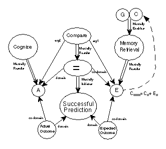

Table of Contents
Table of Contents
 Previous Chapter
Previous Chapter
Table of Contents
Previous Chapter
An early tenet of artificial intelligence is that reasoning about the world is facilitated by declarative knowledge structures representing salient aspects of the world. A declaratively represented world is easier for an intelligent system to understand and operate within than one in which knowledge is encoded procedurally or implicitly. The system may inspect and manipulate such structures, the system can be more easily modified and maintained (by either its programmer or itself), and such representations provide computational uniformity.(1) Furthermore, if a system is to reason about itself, the above tenet can be applied to representations of its own reasoning and knowledge. The aim of this chapter, therefore, is to begin to outline a declarative representation of mental activity. The goal is to explicitly represent the mental world that reasons about the physical world, just as past research has explicitly represented the physical world itself. Instead of representing states and events in the physical world, this chapter discusses how and at what grain level one should represent mental states and mental events. Given such representations, learning processes such as those to be presented in Part Three can better map symptoms of failure to their underlying faults (causes of failure) in support of blame assignment. This chapter presents the representational component of our content theory based, in part, on explanation-pattern theory. In particular, it will illustrate the concepts by assembling representations for the five failure symptom types described in the previous chapter.
To support effective explanation of reasoning failure, and therefore to support learning, it is necessary to represent the thought processes and conclusions that constitute the reasoning being explained. A large number of terms exist in the English language that concern mental activity. Although surface features of a language utterance are not equivalent to the processes or states that may or may not lie behind a given utterance, a number of English expressions point to interesting problems for declarative representations. A few "cognitively homogeneous" terms will be examined that generally refer only to the internal world of the reasoner, rather than the external world of physical objects and other persons.(2) Thus, this chapter will ignore non-cognitive mental states such as emotions (affect, e.g., fear and love). Rather, it will focus on more simple concepts such as think, forget, and imagine, although humans are likely to think thoughts about the external world, forget to perform actions in the world, and imagine what the physical world may be like. With such constraints, the hope is to insulate the task by avoiding consideration of the more complex terms that intertwine the internal and external worlds, and instead, attempt to sketch an ontology of mental representations and a vocabulary of the content of such representations.
Many cognitive vocabularies make a prominent distinction between mental states (as knowledge or belief) and mental mechanisms (as the mental events that process knowledge or information). For example, conceptual dependency (CD) theory (Schank, 1972, 1975) distinguishes between two sets of representations: primitive mental ACTs and mental CONCEPTUALIZATIONs upon which the ACTs operate. In addition, the theory proposes a number of causal links that connect members of one set with members of the other. With such building blocks, a representational language such as CD must be able to represent many process terms: think (about), remember, infer, realize and calculate; and numerous state terms: fact, belief, guess, doubt, and disbelief. This document will refer to the execution of any mental process (or arbitrarily long string of processes) by the generic term Cognize,(3) and to a CONCEPTUALIZATION simply by the term State or Mental-State. See Figure 19, "Preliminary partial ontology of mental terms,"(4) for an initial sketch of a target ontological vocabulary for mental representations. If a reasoner is to understand its own reasoning and mental conditions in any substantial level of detail, it will require a semantic hierarchy containing representations for most of these cognitive terms.
Figure 19. Preliminary partial ontology of mental terms
In addition to the state-process dichotomy, IML theory subdivides process terms by function into mental events that involve memory and transfer of information and those that involve computation or inference.(5) We associate inferential processes with logical or hypothetical reasoning. Example terms include Hypothesize, Speculate, Deduce, Corroborate, and Postulate. However, these inferential terms also include those that receive little attention in the AI community (e.g., Intuit). In Figure 19, inferential processes are subdivided into those driven by deliberate goals for processing (Calculate) and those in which belief is either more incidental or less exact (Realize).
Until recently, examples of memory processes such as remember, remind, recall, recognize, and forget (but here, the lack of a process occurring) have been largely unexamined and without explicit representation. Especially in the context of case-based reasoning or any problem solving that depends on indexed memory hierarchies to support a performance task, understanding the operation of memory can be of benefit when learning (see also Leake, 1995, Fox & Leake, 1995a, 1995b, and Kennedy, 1995, for additional arguments in favor of this position). A system that is to adjust the organization of memory will have a better chance of success if it has knowledge of the function and operation of the (cognitive) device it is changing. Thus, for a system to understand and change its own memory effectively, it is important that the system be able to represent the memory processes explicitly.
Schank (1975) developed CD theory to account for the kinds of inferences made by speakers of natural language. To represent language utterances, Schank composed a set of minimal conceptual primitives that would represent the interlingual basis that people used to reason when communicating, rather than simply some representation of the surface structure of language. As an example, ATRANS does not represent particular words, although it roughly maps to an abstract transfer of objects by an agent, such as the verb "to receive" at the surface level. The transfer of possession is not something that necessarily happens in the physical world (e.g., the transfer of ownership); rather it is an abstract social and psychological act that may or may not be accompanied by overt physical movements. Figure 20 shows an example of the ATRANS representation of "John received something from Mary." The double arrow represents a two-way conceptual dependency relationship(6) between the agent on the left and the action on the right. Schank postulated a set of 11 primitive ACTs to which all language utterances by speakers on nontechnical topics could be mapped. The primitives have an important feature of canonical form; that is, all surface forms with the same meaning map to the same representation (e.g., "John received something from Mary." is equivalent to "Mary gave something to John."). They also provide a declarative structure and the semantic inferences (e.g., Mary's object is no longer possessed by her) that provide meaning to the representation.
Figure 20. CD representation of abstract
transfer (ATRANS)
o=physical object; D=direction
Yet, many have argued that such a small set of primitives are not sufficient to represent the meaning of many common natural language utterances. Wilensky (1986a) claims that many of the inferences made by the understanders of language are at an intermediate level of representation, rather than at a primitive level. For instance, the inference that "if a person buys a cake, the agent probably received it from a cashier" is found at the conceptual level of "buy," rather than at the level of the ATRANS primitive in CD theory. Nothing in the meaning of abstract transfer is specific enough to include this condition.
Conversely though, to represent reflexive thoughts about reasoning, complete representations for all inferences and memory processes that generate such inferences, along with a complete enumeration of all knowledge dependencies, are not required. People certainly cannot maintain a logically complete and consistent knowledge base, nor can they perform full dependency-directed backtracking (Stallman & Sussman, 1977) or reason maintenance for belief revision (Doyle, 1979); rather, they depend on failures of reasoning and memory of past errors to indicate where inconsistencies in their knowledge lie. That is, as knowledge is locally updated, a knowledge base will often become globally inconsistent and partially obsolete. It is at the point in which a system (either human or machine) attempts to reuse obsolete information that inconsistency becomes most apparent and further learning is enabled.(7) People often do know when they err if their conclusions contradict known facts, if plans go wrong, or if they forget (even if they cannot remember the forgotten item). Representations should support such types of self-knowledge, and it is at this level of granularity that an epistemologically adequate (McCarthy & Hayes, 1969) content theory of mental representations can be built.
For the above reasons, capturing the full level of details concerning mental activity is not necessary, and CD's two primitives mental ACTS are not sufficient to comprise an adequate representational system that can express states and mechanisms of the mental world. Rather, a vocabulary needs to be delivered that can minimally express the causal relationships involved in reasoning, but concurrently support the explanation of failure in sufficient detail that learning goals can be chosen. That is, granularity is determined functionally.
As an example of the kinds of representations that are required for effective introspective learning, this section will consider how to represent forgetting. The task is especially interesting since the verb forget refers to a non-event, rather than a mental process. Issues will be addressed by considering three prevailing formalisms: logic, conceptual dependency, and explanation patterns. This section will show that, although all three representations have expressive ability, the explanation pattern knowledge representation possesses the most straight forward means for capturing the causal structure, inferences, and meaning of the mental term forget.
In order to use representations of mental terms effectively, a system should consider the structure of the representation, rather than simply how a system can syntactically manipulate representations or make sound inferences from them. In this regard, however, single logical predicates such as "forget" or "remember" are not entirely useful when trying to understand the memory failure of a person, P.
Because the predicates involve memory, it is helpful to posit the existence of two contrasting sets of axioms: the background knowledge (BK), or long-term memory of the agent, P, and the foreground knowledge (FK), representing the currently conscious or active axioms of the agent. Equation (8) shows the resulting interpretation of person P forgetting memory item M.
With such a representation, one can also express the proposition that the person P knows that he has forgotten something; that is, the memory item, M, is on the tip of agent P's tongue. P knows that M is in his background knowledge, but cannot retrieve it into his foreground knowledge:
(9)
But to start to include these interpretations is to add content to the representation, rather than simply semantics. It is part of the metaphysical interpretation (McCarthy & Hayes, 1969) of the representation that determines an ontological category (i.e., what ought to be represented), and it begins to provide epistemological commitments (e.g., that the sets BK and FK are necessary representational distinctions). However, meaning is not only correspondences with the world to be represented, but meaning is also determined by the inferences a system can draw from a representation (Schank, 1975). The "forget" predicate offers little in this regard. Moreover, this predicate will not assist a reasoning system to understand what happens when it forgets some memory item, M, nor will it help the system learn to avoid forgetting the item in the future. Finally, because the semantics of a mental event which did not actually occur is not represented well by a simple negation of a predicate representing an event which did occur (Cox & Ram, 1992a), the logical expression ¬Remember (John, M) is essentially a vacuous proposition. This is not to say that logic cannot represent such a mental "non-event," rather, this simply illustrates that it is not an elementary task to construct an adequate representation of forgetting and that a single logical predicate will not suffice.
An alternative representational approach was undertaken by Schank, Goldman, Rieger & Riesbeck (1972) in order to specify the primitive representations for all verbs of thought in support of natural language understanding. They wished to represent what people say about the mental world, rather than represent all facets of a complex memory and reasoning model. They therefore used only two mental ACTS, MTRANS (mental transfer of information from one location to another) and MBUILD (mental building of conceptualizations), and a few support structures such as MLOC (mental locations, e.g., working memory, central processor and long-term memory).(8)
As a consequence, the CD representation of forgetting by Schank and his colleagues is as depicted in Figure 21 (cf. Figure 20). John does not mentally transfer a copy of the mental object, M, from the recipient case, that of John's long-term memory, to his central processor. Such a representation does provide more structure than the predicate forms above, and it supports inference (e.g., if M was an intention to do some action, as opposed to a proposition, then the result of such an act was not obtained; Schank, 1975, p. 60). However, the CD formalism cannot distinguish between the case during which John forgot due to M not being in his long-term memory and a case of forgetting due to missing associations between cues in the environment and the indexes with which M was encoded in memory. Thus, it does not provide enough information to learn from the experience.
Figure 21. CD representation of forgetting
o=mental object or conceptualization; R=Recipient;
CP=Central Processor; LTM=Long Term Memory
To represents some of the nuances implied by the term forget and not easily captured by either logic or CDs, IML theory uses an extension of Explanation Pattern (XP) theory (Leake, 1992; Owens, 1990a; Ram, 1989, 1991, 1994; Schank, 1986; Schank & Kass, 1990).(9) Essentially, XPs are directed graphs with nodes that are either states or processes and links that are either ENABLES links (connecting states with the processes for which they are preconditions), RESULTS links (connecting a process with a result), or INITIATE links (connecting two states). The links of an XP (as we use them here) include numbering to indicate relative temporal sequence between links. Figure 22(10) illustrates an explanation for why a volitional agent, A, performs a given action, M (i.e., it explains the actor relation of M). The causal reason is that the agent has the goal of achieving the desired state, GS, and the agent knows that GS will results from M if he performs it (Ram, 1989).
Figure 22. XP representation of
XP-GOAL-OF-OUTCOME->ACTOR
GS=good state; MOP=memory organization package
A Meta-XP is similar to a standard XP in that it is an explanatory causal structure. The major difference between the two is that instead of presenting a causal justification for a physical relation (such as why people look like their ancestors) or a volitional role relation (such as why a person performs a given action), a Meta-XP explains how and why an agent reasons in a particular manner.
The Meta-XP structure of Figure 23 represents a memory retrieval attempt enabled by goal, G, and context cues, C, that tried to retrieve some memory object, M, given an index, I, that did not result in an expectation (or interpretation), E, that should have been equal to some actual item, A. The fact that E is out of the set of beliefs with respect to the reasoner's foreground knowledge (i.e., is not present in working memory) initiates the knowledge that a retrieval failure had occurred.
Figure 23. Meta-XP representation of
forgetting
A=actual; E=expected; G=goal; C=cues; M=memory item; I=memory index.
Because forgetting is not a mental event, but rather the lack of successful memory processing, challenges exist when representing it. Forgetting can be expressed properly only if a system can represent that it does not believe a successful memory retrieval has occurred. The belief logic of Doyle (1979) has four truth values for a given proposition "p." If p is believed then it is in the set of beliefs, whereas if p is not believed then it is out. Conversely, the negation of the assertion of p may be either in or out of the agent's set of beliefs. Therefore, the four truth values are p(in), p(out), ¬p(in), and ¬p(out). Using these values, a system needs to be able to declare that there is a memory item that was not retrieved.
The system could create a dummy concept representing the forgotten item that it believes did not result from some retrieval process. This concept could be marked as disbelieved with the above notation, since it was not retrieved and cannot be specified by the system. But technically, it is incorrect to assert that the concept is not believed, if it is in the system's background knowledge. In other words, it is believed but not recalled. Cox & Ram's (1992a) response to this dilemma was first, to assume a special set of beliefs representing the working memory of the system (the FK), and then secondly, to modify Doyle's belief logic to claim belief membership with respect to a particular set of beliefs. Thus, P, a given memory item that was not retrieved, may be in the set of beliefs with respect to the BK, written P(inBK), but out of the set of beliefs with respect to the FK, written P(outFK).(11)
As specified in Table 6, the number of ways that the memory retrieval process may fail depends on the conditions of the nodes A, E, G, I, and M. If the memory item, M, is not in the BK (i.e., M(outBK)), then there is nothing to be retrieved. This can occur either because there never was a concept in memory to be retrieved, or because the item was previously deleted from memory. Ostensibly, no difference exists between the two in this representation. For example, in the Meta-AQUA story understanding system, a novel situation exists when trying to explain a police dog barking at a passenger's luggage in the airport (Section 2.1.1). The system had previously encountered dogs barking only at animate objects, so it had no structure in memory to understand this novel event. Although this example does not represent forgetting per se, in systems that delete memory items in order to facilitate learning (e.g., Markovitch and Scott, 1988; Smyth & Keane, 1995), trying to retrieve a deleted item is equivalent to a novel situation from a computational perspective.
 Table 6: Truth values of graph nodes for forgetting
Table 6: Truth values of graph nodes for forgetting
--------------------------------------------------------
Description A E G I M
--------------------------------------------------------
Absent Memory
(Novel Situation) inFK outFK inFK outBK outBK
Absent Index
(Missing Association) inFK outFK inFK outBK inBK
Absent
Retrieval Goal inFK outFK outFK X X
Absent
Feedback outFK outFK X X X
--------------------------------------------------------
X = don't care
--------------------------------------------------------
A more prototypical instance of forgetting is illustrated in the second Meta-AQUA story of Chapter II (Section 2.1.2). The system acquires a new explanation for why dogs bark, but because it indexes it by containers, the subsequent story is not able to retrieve it given the context of a dog barking at a pile of dirty clothes (the location of the suspect's stash of contraband). The correct index is missing and so no explanation is retrieved, although it certainly knows the correct explanation. The node truth values on the Meta-XP representation of this event are arrayed according to the second row from the top of Table 6 (refer to Figure 23 for the corresponding nodes or peek ahead to Figure 29 on page 88).
These tabularized values on the representation of Figure 23 capture an entire class of memory failures: failure due to a missing index, I; failure due to a missing object, M; failure because of a missing retrieval goal, G;(12) or failure due to not attending to the proper cues, C, in the environment. Having such a declarative representation allows the system to reason about the various causes of forgetting; it can inspect the structural representation for a memory failure and therefore, analyze and consider the reasons for the memory failure. Such an ability facilitates learning because it allows a learner to explain the reasoning failure and use the result in determining what needs to be learned. (13)
In most interpretations (e.g., Kuokka, 1990, p. 5; Hayes-Roth, Waterman, & Lenat, 1983, p. 402), meta-X can be translated to "X about X. Therefore, a meta-explanation pattern (Meta-XP) is an explanation pattern about another explanation pattern. Whereas, an Explanation Pattern (XP) is a causal structure that explains a physical state by presenting the chain of physical events causing such states, a Meta-XP is an explanation of how or why an XP is generated incorrectly or otherwise fails.(14) Two classes of Meta-XPs exist to facilitate a system's ability to reason about itself and to assist in selecting a learning algorithm or strategy. A Trace Meta-XP (TMXP) explains how a system generates an explanation about the world (or itself), and an Introspective Meta-XP (IMXP) explains why the reasoning captured in a TMXP goes awry. Thus, a TMXP records the extent of reasoning tasks and the reasons for decisions taken during processing. An IMXP is a general causal structure that represent explanations of various the failure types from the taxonomy of Chapter III. The IMXP structures represent past experience of reasoning about the self (i.e., cases of meta-reasoning) and assist in forming the learning goals of the system after failure occurs. Whereas a TMXP records the immediate mental events of the reasoner and they exist in the FK, IMXPs are retrieved from the BK and applied to TMXPs. This case-based approach to self understanding is similar to the operations by which standard XPs are retrieved and applied to input representations for story understanding. The same basic algorithm is used in each.
Explanation patterns (XPs) are similar to justification trees, linking antecedent conditions to their consequences. The XP is essentially a directed graph of concepts, connected with RESULTS, ENABLES and INITIATES links. A RESULTS link connects a process with a state, while an ENABLES link connects a precondition state to a process. An INITIATES link connects two states. The set of sink nodes in the graph is called the PRE-XP-NODES (see Figure 24). These nodes represent what must be present in the current situation for the XP to apply. One distinguished node in this set is called the EXPLAINS node. It is bound to the concept which is being explained. Source nodes are termed XP-ASSERTED-NODES. All other nodes are INTERNAL-XP-NODES.
Figure 24. XP as a directed graph
a=asserted; i=internal; p=pre-XP; e=explains
For an XP to apply to a given situation, all PRE-XP-NODES must be in the current set of beliefs. If they are not, then the explanation is not appropriate to the situation. If the structure is not rejected, then all XP-ASSERTED-NODES are checked. For each XP- ASSERTED node verified, all INTERNAL-XP-NODES connected to it are verified. If all XP-ASSERTED-NODES can be verified, then the entire explanation is verified.(15)
In the representation presented here, attributes are treated as first-class objects; that is, attribute relations have an explicit frame representation. For instance, the greater-than relation of Figure 25 has both domain and co-domain slots. Therefore, the token greater-than.7 expresses the proposition that the integer two is greater than one. Moreover, this same notation can represent the slot (attribute) of a frame. The result attribute of mental-process.21 is a relation (result.52) from its domain (mental-process.21) to its co-domain (mental-state.12). As indicated by the lowest level of parentheses, frame slots have both value and relation facets. This explicit representation allows a system to assert specific propositions about slots, instead of only values. A system can therefore ask a question about the result slot itself. Questions such as "What was the result of mental-process.21?" need only refer to the value facet of the attribute; but, questions such as "Why did the process result in state.12?" can only be formed properly if the result relation has an explicit representation (Ram, 1989; Wilensky, 1986b).
Figure 25. Relations as first-class objects
arrows = token assignments
Ram (1990, 1994) has developed a theory of motivational explanation based on decision models which characterize the decision process that an agent goes through in deciding to perform an action. For example, the religious-fanatic explanation for suicide bombing is a decision model describing why a bomber would choose to perform a terrorist strike in which the bomber dies (see Figure 26 and compare to Figure 22 on page 76).(16) Ram's model claims that an agent first considers any relevant goals, goal priorities, and the expected outcome of performing the action. The actor then makes a decision whether or not to enter into such a role, and if so, performs the action. IML theory extends the model to account for introspective reasoning.
Figure 26. Volitional XP for why agent
performs suicide bombing
(adapted from Ram, 1993)
BS=bad state; GS=good state; MOP=memory organization package
Meta-reasoning can be conceptualized in a similar manner. A set of states, priorities, and the expected strategy outcome determine a reasoner's decision of a processing strategy, like the above factors determine the actor's decision to act. Based on general knowledge, current representation of the story, and any inferences that can be drawn from this knowledge, the reasoner chooses a particular reasoning strategy. Once executed, a strategy may produce further reasoning, requiring additional strategy decisions.
These decisions are chained into threads of reasoning such that each one initiates the goal that drives the next. Though the chains can vary widely, in the task of question-driven story understanding, the chains take the following form: Identify Anomaly --> Generate Explanation --> Verify Hypothesis (see Figure 14 on page 36 in Chapter II). Note that since the explanation generation phase produces a hypothesis and the verification phase produces a measure of goodness, if the hypothesis has been confirmed with a sufficiently high confidence, then the overall product of the understanding process has been a sound explanation. Alternatively, if the explanation has been disconfirmed, then a later failure identification phase should generate the question "Why did the explanation fail?" This knowledge goal triggers the learning process.
The understanding process is recursive in nature. For example, if a hypothesis generates a new question, then the reasoner will spawn a recursive regeneration of the sequence because an unanswered question is anomalous. Like physical explanations that explain how objects work in the physical world, and volitional explanations that explain why agents perform various acts in the world, introspective explanations explain how and why conclusions are drawn by the reasoner; they explain events in the mental world.
When insufficient knowledge exists on which to base a decision, a useful strategy is to simply defer making the decision. The reasoning task is suspended and later continued if and when the requisite knowledge appears. This is a form of opportunistic reasoning. Meta-XPs are able represent chains of reasoning that follow from opportunistic reasoning as well as uninterrupted decisions.
A Trace Meta-XP, representing the trace of the reasoning process, is a chain of Decide-Compute-Nodes (D-C-Nodes). Figure 28 shows the outermost frame definition(17) of the decide-compute-node type whose graph structure is shown in Figure 27. A non-recursive single instance of explanation would be a chain of three D-C-Nodes, one for each phase in the anomaly-identification/generate-explanation/verify-hypothesis sequence.(18) These nodes record the processes that formulate the knowledge goals of a system, together with the reasons for and the results and side-effects of performing such mental actions. The trace of reasoning is similar to a derivational analogy trace as described by Carbonell (1986) and Veloso and Carbonell (1994). A Trace Meta-XP is a specific explanation of why a reasoner chooses a particular reasoning method and what results from the strategy. Like an XP, the Meta-XP can be a general structure applied to a wide range of contexts, or a specific instantiation that records a particular thought process. One distinguishing property of Trace Meta-XPs is that a decision at one stage is often based on features in previous stages. For example, the decision of how to verify a hypothesis may be based on knowledge used to construct the hypothesis initially. This property, deciding based on previous knowledge, is particularly true of learning, which, by definition, is based on prior processing.
Figure 27. Graph structure for Decide-Compute-Node
Figure 28. Frame definition for Decide-Compute-Node
Whereas a Trace Meta-XP explains how a failure occurred, by providing the sequence of mental events and states along with the causal linkage between them, an Introspective Meta-XP explains why the results of a chain of reasoning are wrong. The IMXP posits a causal reckoning between the events and states of the TMXP. In addition, an IMXP provides a learning goal specifying what needs to be learned. Then, given such an explanation bound to a reasoning chain, the task of the system is to select a learning strategy to reduce the likelihood of repeating the failure.
An IMXP consists of six distinctive parts:
There are three classes of IMXPs: base, core, and composite. Base types constitute the basic vocabulary (labels) with which core IMXPs are built. We have identified seven primitive types in the base class: successful prediction, inferential expectation failure, incorporation failure, belated prediction, retrieval failure, construction failure, and input failure. The core types are representations of the failure types enumerated in Table 4, "Final table for reasoning model," on page 50. They include representations for failures such as contradiction and impasse, and the IMXP representation for each will be shown in Section 4.7. Core types are combined to form composite IMXPs that describe situations encountered by reasoning agents, such as the "Drug Bust" examples in Section 2.1.
The internal graph structure of an IMXP consists of nodes, representing both mental states and mental events (processes), and the causal links between them. The nodes and links have the same semantics as those described for TMXPs in section 4.4.1. The graph gives both a structural and a causal accounting of what happened and what should have happened when information was processed.
Consider the graph diagram in Figure 29 (cf. Figure 23). It represents the introspective reasoning of the second drug-bust story in Chapter II (Section 2.1.2). In this story, the Meta-AQUA system forgets the explanation learned in the previous story, that dogs will bark at inanimate objects when they detect contraband. Because this explanation was indexed by containers, the system retrieves no explanation to explain why the dog is barking at a pile of dirty clothes; that is, it experiences a memory impasse. Later in the story, when the officer praises the dog for barking at the clothes, the system infers that the explanation should have been a detection explanation. This graph structure represents the composite IMXP ANOMALY-AND-BAFFLED. It contains but one core case, a missing association, and has at its heart the base case of retrieval failure. In Figure 30, a frame definition is provided for the IMXP composite type from which the instance portrayed in Figure 29 was formed.(19)
Figure 29. Representation for forgotten
detection explanation
A=actual; E=expected; Q=question; I=index; M=memory item
Figure 30. IMXP frame definition for forgetting
Base class IMXPs represent a primitive type or component in the content theory of mental events from which traces of reasoning failures may be constructed. The goal is to enumerate a sufficient number of these basic types to cover the major kinds of reasoning failures that arise in story understanding and other tasks. The types of failures (discussed Section 3.2 on page 45) fall into two complementary classes: commission error and omission error. Commission errors stem from reasoning which should not have been performed or knowledge which should not have been used. Omission errors originate from the lack of some reasoning or knowledge. The content theory herein contains Base IMXPs to describe both classes of failure.
The partial ontological hierarchy of mental terms in Figure 19 on page 70, pictures some basic type identifiers of the mental domain. They represent the most fundamental labels used to identify particular classes of mental actions and states and provide the primitive building blocks with which declarative structures are assembled to describe the processing that occurs within intelligent systems. A major goal of an understanding system operating in a mental world is to refine the labels of structures as additional knowledge is gained about particular actions in the domain. For instance, a system may only know that a particular node is some kind of cognitive process, thus it labels it with the vocabulary term Cognize. If the system subsequently discovers that it is a memory process, the label can be refined to Memory Process.(20) As more information is ascertained, the system may determine that the structure actually represents Recall or Recognize. As each label is refined, additional inferences are warranted.
Not shown in Figure 19 are the terms used to represent failure. These vocabulary labels are the base IMXP types mentioned in the previous subsection. This research has identified two types of commission error labels: Inferential expectation failures typify errors of projection. They occur when the reasoner expects an event to happen in a certain way, but the actual event is different or missing. Incorporation failures result from an object or event having some attribute that contradicts some restriction on its values. Four omission error labels have also been identified: Belated prediction occurs after the fact. Some prediction that should have occurred did not, but only in hindsight is this observation made. Retrieval failures occur when a reasoner cannot remember an appropriate piece of knowledge; in essence, it represents forgetting or memory failure. Construction failure is similar, but occurs when a reasoner cannot infer or construct a solution to a problem. Input failure is error due to lack of some input information. To construct the five core types of failure (outlined in Section 3.2), these labels are used. The basic organization for all of these representations is at the level of a comparison between an expectation and some feedback (either from the environment or additional inference or memory).(21) Oehlmann, Edwards, and Sleeman (1995) stress the importance of metacognitive processing to provide expectations and to monitor comprehension, both in human and machine systems. The representations used by any system should support these processes. The following sections provide representations for both successful and for failed mental processing.
An illustration of a simple base type representations is contained in Figure 31.(22) With this figure and the ones to come representing subsequent core IMXPs, the Cognize nodes may actually consist of an arbitrarily long chain of computations. The node is actually represented by a TMXP rather than a single process. See Figure 32 for the frame definition of this graph structure for further clarification.
Figure 31. Meta-XP representation of successful prediction
Figure 32. Successful prediction frame definition
The EXPLAINS node of the XP is the node labeled "Successful Prediction." The
equals relation between A and E mentally-initiates the node. Now, let node A
be an actual occurrence of an event, an explanation, or an arbitrary
proposition. The node A results from either a mental calculation or an input
concept. Let node E be the expected occurrence. The expected node, E,
mentally-results from some reasoning trace enabled by some goal,
G, and context, C. Now if the two propositions are identical, so that E is a
subset of, or is equal to, A, then a successful prediction has occurred.(23) Failures occur when A <> E. This state exists when either A and E are disjoint or there are conflicting assertions within the two nodes. For example A and E may be persons, but the concept at node E contains a slot specifying gender=male.0, whereas the concept at A contains the slot gender=female.0. Although successful prediction produces no learning, a representation must exist for it.
Before examining the representation for reasoning failures, it is worth noting that the basic representation of successful prediction can account for many of the process terms in our target ontology (Figure 19 on page 70), not just classes of failure. Figure 33 illustrates successful prediction when the value of the Cognize node that produces the expectation, E, is a memory process. This representation can easily capture the distinctions between an incidental reminding, a deliberate recall, and recognition; that is, the three sub-nodes of Remember in Figure 19. The structural differences depend on the nodes C and G, and the temporal order of the causal links resulting in nodes E and A (see Table 7). If there is no knowledge goal (Ram, 1991; Ram & Cox, 1994; Ram & Hunter, 1992) to retrieve some memory item, only cues in the environment, and if E is retrieved before A is produced, then the structure is a reminding. On the other hand, if there is a deliberate attempt to a memory item that is later compared to some feedback, A, then the structure represents recall. Finally, if A is presented followed by a memory probe, then the structure represents recognition, whether or not a retrieval goal exists. It is also significant to note that the memory Elaboration term of Figure 19 can be represented as a feedback loop from E to C such that each new item retrieved adds to the context that enables further memory retrieval.(24)This is represented as a dashed line in Figure 33.
 Figure 33. Meta-XP representation of several
remembering events
A=actual; E=expected; G=goal; C=context or cues
To support learning, a theory should have a level of representation that reflects the structure and content of reasoning failures. Section 3.2, "Types of Reasoning Failure" extends the scope of reasoning failure to include the following forms: contradiction, impasse, false expectation, surprise, and unexpected success. This section provides explicit representations for each of these five types at a level of representation that is sufficient for learning.
Table 7: Structural differences between remembering events
---------------------------------------------------------------------
Memory Structural Features Description
Term
---------------------------------------------------------------------
Reminding Has only Cues; Incidental;
E before A No Knowledge Goal
Recall Cues and Goal; Deliberate;
E before A Has Knowledge Goal
Recognition May or may not have Goal; Borderline between 2 above;
A before E Has judgement
---------------------------------------------------------------------
Figure 34 illustrates the representation for a contradiction failure. Some goal, G, and context or cues, C, enables some cognitive process to produce an expected outcome, E. A subsequent cognitive mechanism produces an actual outcome, A, which when compared to E, fails to meet the expectation. Realizing this inequality of actual outcome with expected outcome initiates the knowledge of contradiction.
Figure 34. Meta-XP representation of contradiction
A=actual; E=expected; G=goal; C=context or cues
If the right most Cognize node is an inferential process, then the failure is labeled Expectation Failure and the node C represents the context; whereas, if the process was a memory function, the contradiction is labeled Incorporation Failure and C represents memory cues. The latter case occurs when an input concept does not meet a conceptual category during understanding. Both inferential expectation failure and incorporation failure are errors of commission. Some explicit expectation was violated by later processing or input.
Figure 35, "Meta-XP representation of impasse," represents a class of omission failures that include forgetting as discussed earlier. Some goal, G, and context or cues, C, enables a cognitive process to attempt production of an expected outcome, E. Because the expectation, E, was not generated, it cannot be compared to an actual outcome, A, produced by a subsequent cognitive mechanism. Realizing that E is not in the set of beliefs with respect to the foreground knowledge of the system (i.e., was not brought into or created within working memory) initiates the knowledge of failure.
Figure 35. Meta-XP representation of
impasse
A=actual; E=expected; G=goal; C=context or cues
If the right-most Cognize term is a memory retrieval process, then the Meta-XP indeed represents forgetting,(25) and the structure is labeled Retrieval Failure. The impasse is a memory process that fails to retrieve anything. If the node is an inferential process, however, then the impasse failure is equivalent to the failures as recognized by Soar (a blocked attempt to generate the solution to a goal), and the structure is labeled Construction Failure. A construction failure occurs when no plan or solution is constructed by the inference process.
As seen in Figure 36, the representation of false expectation anticipates an actual event (A1) which never occurs or cannot be calculated. Instead, another event (A2) causes the reasoner to realize the error through hindsight. It is not always evident what this second event may be, however. Sometimes it is a very subtle event associated with just the passage of time, so there is no claim here that the second event is a conscious one. In this sequence, the reasoner realizes that the anticipated event is out of the set of beliefs with respect to the FK, and will remain so.
Figure 36. Meta-XP representation of false expectation
A=actual; E=expected; G=goal; C=context or cues
Despite the fact that false expectation and surprise are not closely related in the table of failure types (Table 4, "Final table for reasoning model," on page 50), they are quite related in structure. As will be seen in the subsequent subsection, they both share the incorrectly anticipated Successful Prediction node and also the node labeled Belated Prediction.
Figure 37, "Meta-XP representation of surprise," represents a class of failures rarely treated in any AI system. A surprise occurs when a hindsight process reveals that some expectation was never generated. The explanation is that there was never a goal, G2, to create the expectation, either through remembering or inferring. Some earlier process with goal, G1, failed to generate the subsequent goal. When the node A is generated, however, the system realizes that it is missing. This error, by definition, is a missing expectation discovered after the fact. Again, note the similarity between the representations for surprise and false expectation.
Figure 37. Meta-XP representation of surprise
A=actual; E=expected; G1,G2=goals; C=context or cues
Finally, Figure 38, "Meta-XP representation of unexpected success," contains a Meta-XP representation of an unexpected success, a failure similar to contradiction. However, instead of E being violated by A, the expectation is that the violation will occur, yet does not. That is, the agent expects not to be able to perform some computation (e.g., create a solution to a given problem), yet succeeds nonetheless. In such cases the right-most Cognize term will be some inferential process. If this process is a memory term instead, the failure represents the case of an agent that does not expect to be able to remember some fact or event when necessary, yet when the time comes, it does nonetheless.
Figure 38. Meta-XP representation of unexpected success
A=actual; E=expected; G=goal; C=context or cues
The few examples presented in this chapter demonstrate both the usefulness and complexity of representing mental events and states. The chapter began by describing a target ontology of mental terms that would provide a useful vocabulary for systems that reason about the mental domain. The remainder of the chapter concentrated on composing a representation for just those terms that pertain to the five failure symptoms derived in the previous chapter. If a system is to learn from its reasoning failures effectively, it needs to represent the kind of mental symptoms and faults it is likely to encounter so that these can be reasoned about explicitly. Only enough representational detail must be provided so that the system can explain its own failures and thereby learn from them. That is, the representations must have causal and relational components that identify those factors that explain how and why a failure occurred. A knowledge structure called a trace meta-explanation pattern is used to provide a record of system reasoning. It explains how the failures occur. An Introspective Meta-Explanation Pattern represents an abstract causal pattern of failure that explains why the reasoning embodied in a trace fails.
Despite the difficulty of formulating a complete representation of mental events, the effort promises to aid a system when reasoning about itself or other agents, especially when trying to explain why its own or another's reasoning goes astray. Furthermore, even though the CD representation of mental terms leaves much detail unrepresented, the original goal of Schank et al. (1972) to represent the mental domain is a fruitful one. If future research can more fully specify a representational vocabulary for the ontological items illustrated in Figure 19, these domain independent terms can help many different intelligent systems reason in complex situations where errors occur.
Although many of the details of this chapter may be overly simplified, the formalism remains an improvement over many of the representational systems proposed in the past (e.g., logic and CD theory) with respect to representing mental states and mechanisms. Especially considering the emphasis by Schank on expectation as a driving force in text comprehension and problem solving (a point made explicitly as early as Schank, 1972, and, to some extent, in Schank & Tesler, 1969), the CD representation for the concept of "expectation" is not sufficient to express its central role in cognition. For example, the CD representation for "John expects Bill to become a doctor" (Schank et al., 1972, p. 29) is shown in Figure 39. Very little information is provided in this structure, and few inferences may be obtained from it or learning performed from it.
Figure 39. CD representation of expectation
f=future tense; MLOC=Mental Location; LTM=Long
The following chapters of Part Three will introduce the process theory of introspection and learning. Chapter V first presents a model of understanding and then a model of learning. Chapter VII provides the algorithms that underlie these models and that manipulate the current chapter's representations when learning. Additional examples from the Meta-AQUA system will illustrate the utility of Meta-XP representations.
X.0 an attribute value; (X) a frame of type X; =X variable binding to the outermost slot named X; (=X =Y) a list of variable bindings; (X =Y) an frame of type X with referent alias named Y.This last feature is included so that variable can be bound to slots other than the outermost slots.
Table of Contents
 Next Chapter
Next Chapter